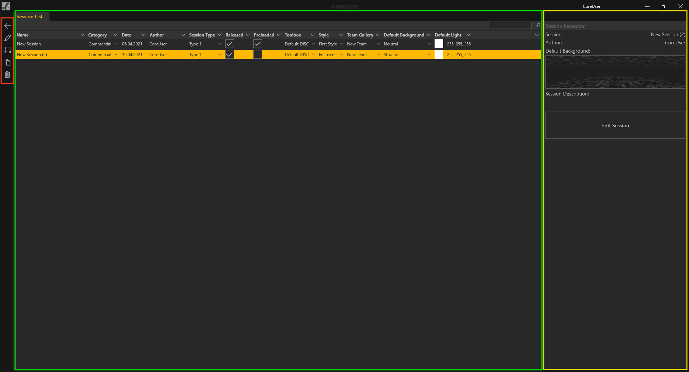

Sessions

Die Session List
Das Session List Fenster unterteilt sich in drei Bereiche. Ganz Links befinden sich die allgemeinen Bedienelemente. In der Mitte befindet sich das Hauptfenster mit der Listen Ansicht der Sessions. Rechts daneben befindet sich der Session Inspector.
Die eigentliche Liste der Sessions ist in mehrere Spalten unterteilt. Jede Spalte repräsentiert dabei eine allgemeine Eigenschaft einer Session. Sessions können durch Klicken auf die jeweilige Eigenschaft in der Kopfzeile der Liste sortiert werden.
Name - Name der Session. Durch Doppelklick kann dieser geändert werden.
Category - Hier können sie ihrer Session eine Kategorie vergeben. Die Kategorien finden sich als Ordner im Dashboard des Showrooms wieder, in denen die Sessions dann verfügbar sind.
Date - Beim Erstellen einer Session wird automatisch das aktuelle Datum vergeben. Das hilft die Sessions nach Datum zu sortieren und wiederzufinden
Author - Hier können sich die AutorInnen der Session eintragen, um so später nach ihren Session filtern zu können.
Session Type - Eine Session kann einem bestimmten Typ angehören wie Workshop oder Präsentation. Haben sie einen Typ vergeben ist es einfach alle Workshops zu filtern und anzeigen zu lassen.
Released - Durch setzen eines Hakens wird die Session im Showroom verfügbar gemacht.
Preload - Ist Preload aktiv wird die Session vorgeladen. So werden Ladezeiten beim Öffnen der Session im Showroom verkürzt.
Toolbox - Hier kann eine Toolbox aus der Toolbox List ausgewählt werden. In Kapitel Toolbox gibt es detaillierte Informationen dazu.
Style - Hier kann ein Style aus der Style List zugewiesen werden. Was genau ein Style ist, wird in Kapitel Styles detailliert erläutert.
Default Background - Ein einheitlicher 3D-Hintergund bzw. Thema kann hier aus einer Auswahl für die gesamte Session gesetzt werden. Alle Elemente in der Agenda werden diesen Hintergrund vorerst verwenden.
Der Session Inspector auf der rechten Seite stellt noch einmal die wichtigsten Eigenschaften einer ausgewählten Session bereit. Außerdem gibt es an dieser Stelle die Möglichkeit Notizen zur jeweiligen Session zu machen.
Session Description: - Notiz zur Session
Mit dem ‘Edit Session’ Button gelangt man in die Bearbeitungsebene der Session. Einen detaillierten Einstieg gibt es in Kapitel [Session Worfklow].